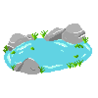
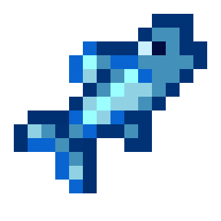
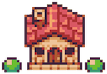

Rainbow Bridge
Please enjoy on Google Chrome or Firefox only
Based on the poem written by artist Edna Clyne-Rekhy,
Rainbow Bridge is a walking simulator that explores pet
loss and grief.
Run around your landscape, enjoy the ambience, and play minigames to collect keys. With
each
collected
key, you are one step closer to the Rainbow Bridge.
Hint: look for the objects below
  